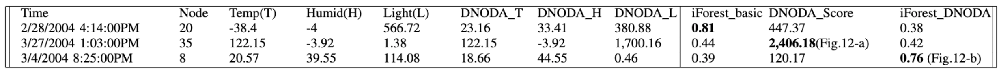

1) Direct Neighbor Outlier Detection Algorithm (DNODA):
Whether a node is an outlier based on the data of direct neighbors of the node.
2) Community Neighbor Algorithm (DNODA):
Whether a node is an outlier based on the data of neighbors inside each community of the node.

Intel Dataset